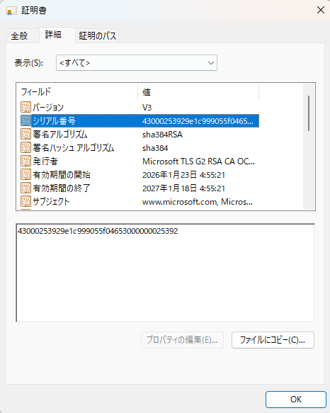
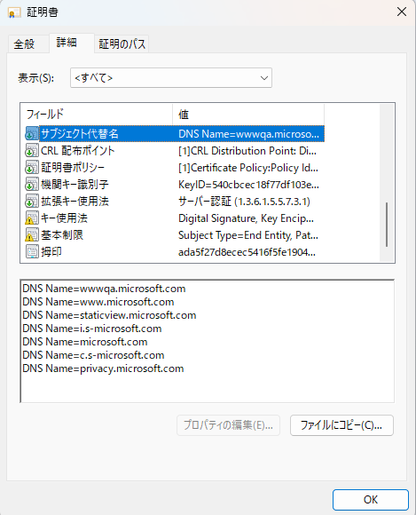
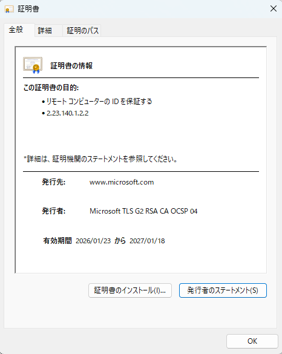
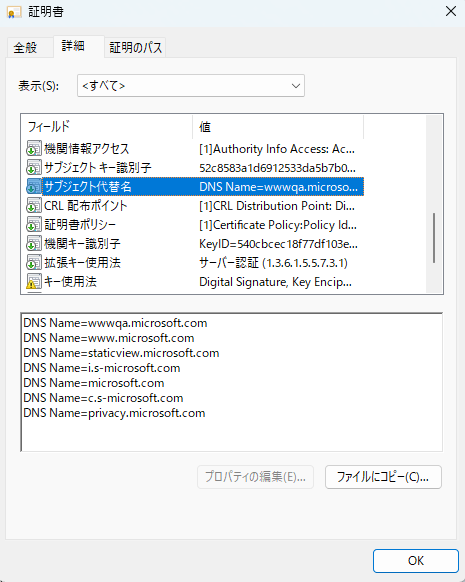
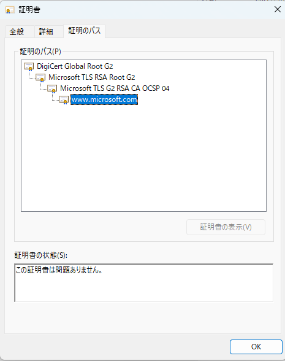
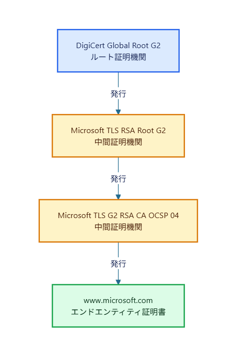
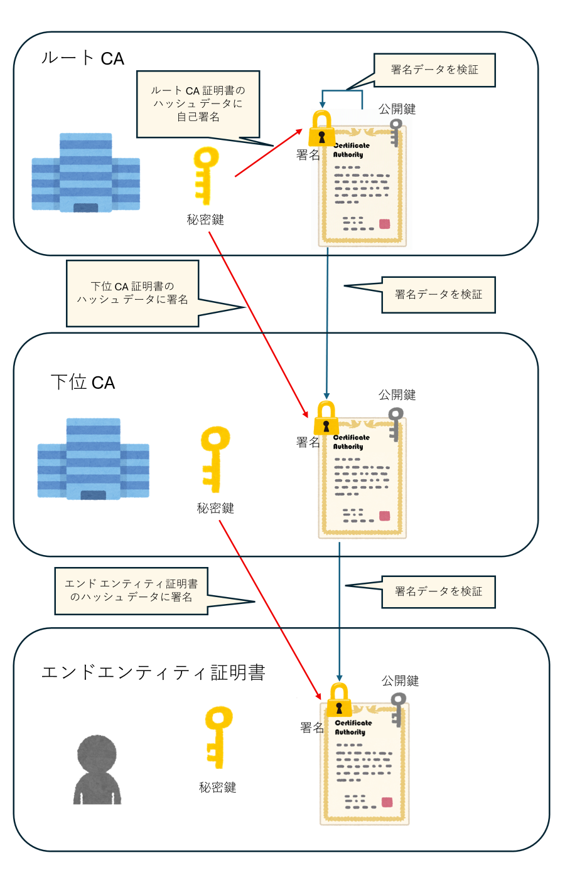
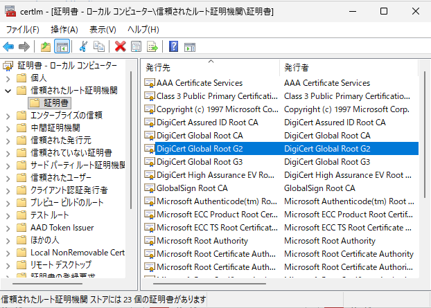
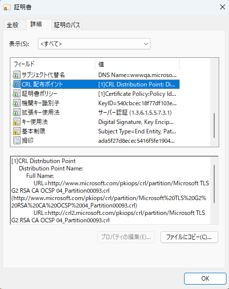
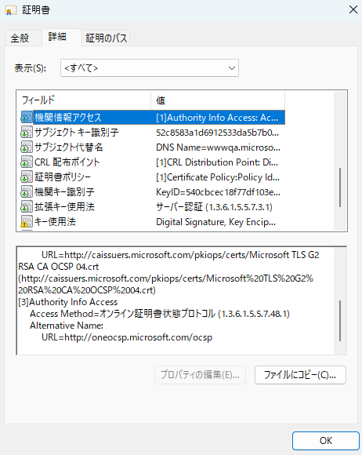

こんにちは。Windows サポート チームです。
本記事では、デジタル証明書の検証の仕組みと、証明書に記載される内容について説明します。
前回の記事では、PKI の概要や、暗号技術やデジタル署名、そしてデジタル証明書の役割について紹介しました。
今回は、デジタル証明書に記載されている内容や、どのようにデジタル証明書を信頼できるのかの仕組みについて紹介します。
デジタル証明書の記載内容
Windows における（秘密鍵を含まない）デジタル証明書ファイルの拡張子としては .cer や .crt などがあり、これらのデジタル証明書のファイルは、 X.509 という国際基準規格でフォーマットされています。
X.509 証明書には、バージョン⁽¹⁾、シリアル番号、発行者、サブジェクト、有効期限、公開鍵などの基本フィールド と、証明書の用途や制約を表す 拡張フィールド (Extensions) が含まれます。
⁽¹⁾バージョン は証明書の形式の版数を示す項目で、現在一般的に利用されているのは X.509 Version 3 (v3) です。v3 では拡張フィールドが追加され、証明書の用途や制約を詳細に定義できます。
Windows 上でデジタル証明書ファイルを開くと以下の内容が確認できます。

本ブログでは、フィールドに記載されている、よく確認する項目の一部をご紹介します。
X.509 v3 証明書のフィールドや拡張フィールドの詳細については、RFC 5280 をご参照ください。
シリアル番号 (Serial Number):
証明機関が発行した証明書を一意に識別するための番号です。同じ CA から発行された証明書は、それぞれ異なるシリアル番号を持ちます。
証明機関の中では一意に識別されますが、異なる証明機関が発行した証明書では、シリアル番号が重複する可能性があります。そのため、シリアル番号だけで証明書を一意に識別することはできず、発行者名と組み合わせて確認します。
署名アルゴリズム (Signature Algorithm):
証明機関が証明書にデジタル署名を付与する際に使用したアルゴリズムです。
（例: sha256RSA, sha384RSA, sha256ECDSA 等）
発行者 (Issuer):
デジタル証明書を発行した証明機関の名前を示します。
有効期間 (Validity):
デジタル証明書が有効な期間を示します。「Not Before (有効期間の開始)」と「Not After (有効期間の終了)」で表されます。
サブジェクト (Subject):
デジタル証明書の持ち主 (所有者) の名前が記載されます。
公開キー (Public Key):
公開鍵の実データが含まれます。公開鍵のアルゴリズム (RSA, ECC 等) と鍵のデータ、鍵の長さ (ビット数) が記載されます。
サブジェクトキー識別子 (Subject Key Identifier / SKI):
特定の公開鍵を含む証明書を識別するための値で、一般的には公開鍵から算出したハッシュ値などが使用されます。
サブジェクト代替名 (Subject Alternative Name / SAN):

サブジェクト (持ち主) の別名を記載するフィールドです。
サブジェクト名とは異なり複数の名前を指定することができます。
CRL 配布ポイント (CRL Distribution Points / CDP):
証明書失効リスト (CRL) の公開場所を示します。
証明機関では、発行した証明書のうち失効した証明書の一覧を、CRL として公開しています。
CRL を使って失効確認を行う場合は、CRL 配布ポイント (CDP) から取得した CRL や有効なキャッシュを用いて、対象の証明書のシリアル番号が CRL に含まれていないかを確認します。
機関キー識別子 (Authority Key Identifier / AKI):
証明書の署名に使用された秘密鍵に対応する公開鍵を識別するための情報です。一般的には、公開鍵から算出したハッシュ値などを keyIdentifier に格納し、この値は発行元の CA 証明書のサブジェクトキー識別子 (SKI) と一致します。
なお、AKI には、発行元の CA 証明書を、その証明書の発行者名とシリアル番号で識別する形式もあります。
拡張キー使用法 (Enhanced Key Usage / EKU):
証明書に含まれる公開鍵を、サーバー認証やコード署名など、どの用途に使用できるかを示すフィールドです。Key Usage と EKU の両方が設定されている場合は、両方の制限を満たす必要があります。
- サーバー認証 (1.3.6.1.5.5.7.3.1): SSL/TLS サーバー証明書として使用可能
- クライアント認証 (1.3.6.1.5.5.7.3.2): クライアント認証の証明書として使用可能
- コード署名 (1.3.6.1.5.5.7.3.3): コード署名の証明書として使用可能
- スマートカード ログオン (1.3.6.1.4.1.311.20.2.2): スマートカード認証に使用可能
キー使用法 (Key Usage):
証明書に含まれる公開鍵の使用目的を制限するフィールドです。主な値には以下があります。
- Digital Signature (デジタル署名): デジタル署名の検証に使用可能
- Key Encipherment (キーの暗号化): 鍵の暗号化に使用可能 (TLS の RSA 鍵交換等)
- Certificate Signing (証明書の署名): 他の証明書の署名検証に使用可能 (CA 証明書)
- CRL Signing (CRL の署名): CRL の署名検証に使用可能
機関情報アクセス (Authority Information Access / AIA):
CA 証明書の公開場所を示します。
証明書の検証に使用する CA 証明書を入手できる場所です。
また、 オンラインで失効状態を問い合わせる OCSP がある場合は、OCSP の URL も記載されます。
証明書から算出される情報
Windows の証明書ビューアーの詳細タブには、証明書内のフィールドに加えて、証明書のデータから算出される情報も表示されます。
拇印 (Thumbprint / Fingerprint)
拇印は、証明書全体の DER エンコードされたデータから算出したハッシュ値で、証明書の識別や比較に使用されます。X.509 証明書内に格納されているフィールドではなく、OS やツールが証明書のデータをもとに算出する値です。同じ証明書でも、使用するハッシュアルゴリズムによって拇印の値は異なります。
デジタル証明書を信頼できることを確認する仕組み
前回の記事では、デジタル証明書は「公開鍵付きの身分証明書」であり、信頼できる証明機関 (CA) が発行するものであると説明しました。
しかし、通信相手から提示された証明書を無条件に信頼するわけにはいきません。悪意のある第三者が偽の証明書を提示している可能性もあります。そのため、証明書を受け取った側は、証明書の正当性を検証します。
デジタル証明書に正当性があることの判断基準は、デジタル証明書を検証しているアプリケーション側の実装に依存します。例えば、Microsoft Edge では、オンライン OCSP/CRL による失効確認は既定では無効です。
Microsoft Edge ブラウザー ポリシードキュメント EnableOnlineRevocationChecks | Microsoft Learn
そのため、ご利用のアプリケーションによって行っている証明書検証の項目は異なりますが、証明書の検証における代表的な項目を以下にご紹介します。
- デジタル証明書の有効期間の確認
- サブジェクト名 (デジタル証明書の持ち主) の確認
- 証明書の信頼チェーンの検証
- 証明書の失効確認 (CRL / OCSP)
それでは、各項目について詳しく見ていきましょう。
1. 証明書の有効期間の確認
証明書には有効期間が設定されています。検証を行った時点で、その証明書が有効期間内であるかどうかが確認されます。
証明書の [全般] タブや [詳細] タブには、以下の 2 つのフィールドが表示されます。
- 有効期間の開始 (Not Before): 証明書が有効になる日時
- 有効期間の終了 (Not After): 証明書の有効期限が切れる日時
検証時の日時が、証明書の有効期間内であることを確認します。有効期間外の場合、証明書の検証は失敗します。

例えば、有効期間が 2026/01/23 〜 2027/01/18 の証明書に対して、2026/05/10 に検証を行えば有効期間内のため問題ありません。一方、2027/02/01 に検証を行うと有効期限切れとなり、検証失敗となります。
2. サブジェクト名(デジタル証明書の持ち主)の確認
証明書には、公開鍵に対応する主体（人、組織、サーバーなど）を識別するための情報が記載されています。「サブジェクト（Subject）」はその情報を表すフィールドであり、証明書の用途によって、組織名や名称などが記載されます。また、「サブジェクト代替名（Subject Alternative Name / SAN）」という拡張フィールドに、DNS 名や IP アドレスなどが記載されることもあります。
証明書が意図した相手のものであるかを確認する際に、どの情報をどのように照合するかは、証明書の用途や、アプリケーションが従う仕様によって異なります。用途によっては、Subject に記載された名前などが、主体の識別や確認に用いられる場合があります。一方、HTTPS などの TLS におけるサーバーの名前照合では、接続先のホスト名などを SAN に記載された対応する識別子と照合します。

3. 証明書の信頼チェーンの検証
3-1. 信頼チェーン検証とは
検証している証明書が信頼できる証明機関から発行されたものであるかを確認する検証を信頼チェーンの検証と呼びます。
証明機関から発行された証明書は、証明機関がもつ鍵(秘密キー)で証明書のデジタル署名を行い、正当な機関から発行された証明書であることを示しています。
証明機関が発行した証明書の正当性を検証する際は、発行元の証明機関をたどっていき、最上位にあるルート証明機関を信用していたら、信頼できる証明書として認識するという仕組みになります。
例えば、サーバーから提示された証明書の検証において、証明書のパスが以下の通りになっていたとします。

上述のデジタル証明書(
www.microsoft.com) のパスの階層より、最上位の証明機関(ルート証明機関) が DigiCert Global Root G2 であり、その下位にある証明機関（下位証明機関もしくは中間証明機関と呼ばれます） が、 Microsoft TLS RSA Root G2 及び Microsoft TLS G2 RSA CA OCSP 04 となっていることが確認できます。
※上述のデジタル証明書(
www.microsoft.com) は証明書のパスにおける一番下位の証明書となり、これをエンドエンティティ証明書とも呼びます。
つまり、デジタル証明書(www.microsoft.com) は、 Microsoft TLS G2 RSA CA OCSP 04という中間証明機関より発行されており、Microsoft TLS G2 RSA CA OCSP 04 の中間 CA 証明書は、Microsoft TLS RSA Root G2 という中間証明機関より発行されていることがわかります。さらに、Microsoft TLS RSA Root G2 という中間 CA 証明書は、DigiCert Global Root G2 というルート証明機関から発行されていることを示しています。

3-2. 信頼チェーン検証処理の流れ
上述の状況を踏まえ、信頼チェーンの情報を使って、検証対象のデジタル証明書が信頼できるものと判断するためにどのような検証を行うのか考えてみます。
前回の記事「PKI の概要」でご紹介したように、証明機関がデジタル証明書を発行する際、自身の秘密キー(CA 証明書にある公開鍵とキーペアとなっているもの)でデジタル署名を生成して付与します。
検証をする側は証明機関の CA 証明書を入手し、CA 証明書に付与されている公開鍵を用いて、検証対象の証明書のデジタル署名を検証します。
証明書のデジタル署名は、検証対象のエンドエンティティ証明書だけでなく、信頼チェーン上の中間 CA 証明書についても、それぞれの発行元の公開鍵を用いて検証します。一方、信頼の起点となるルート証明書は、その自己署名が正しいことだけを理由に信頼されるものではありません。あらかじめ信頼するものとして設定されていることが重要です。
そのため、次はエンド エンティティの証明書を発行した証明機関の CA 証明書に対しても、その CA 証明書を発行した証明機関の CA 証明書の公開鍵を用いてデジタル署名を検証します。

このように信頼チェーン上にある証明書を順にたどって検証していくと、最後はルート証明機関の CA 証明書 (ルート証明書)にたどり着きます。
信頼の起点として利用されるルート証明書は、一般に、その証明書に含まれる公開鍵に対応する秘密鍵で署名された自己署名証明書です。
3-3. ルート証明書を信頼する
信頼チェーンを検証する時、ルート証明書については検証を行う側がそのルート証明機関をそもそも信頼しているのかという点がポイントとなります。Windows OS では、[信頼されたルート証明機関] の証明書ストア(Windows OS で証明書を管理している場所)に保存されている証明書を信頼された”ルート証明書” として扱います。

Notes: Windows OS としては上記ストアのルート証明書を、信頼するルート証明書として保管しますが、ルート証明書の正当性は、やはりこれもアプリケーションの実装によって判断基準が異なります。例えば、アプリケーションの実装によっては独自のストアを保持・参照しており、そちらに保管されているルート証明書を信頼するものとして扱う実装となっている場合もございます。
信頼チェーンの検証の仕組みからわかるように、信頼チェーン上にある証明書（エンドエンティティ証明書や中間 CA 証明書）は、入手元そのものを信頼する必要はありません。各証明書のデジタル署名を発行元の公開鍵で検証し、あらかじめ信頼しているルート証明書までつながることを確認するためです。
ここで重要なのは、ルート証明書までチェーンがつながることだけではなく、そのルート証明書を検証する側が信頼していることです。ルート証明書は、このような証明書の信頼関係を確認するための起点となります。
逆に、攻撃者が管理するルート証明書を誤って信頼すると、その配下で発行された偽の証明書も、信頼するルート証明書につながるものとして扱われてしまいます。そのため、信頼の起点として登録するルート証明書は、厳密に管理する必要があります。
ご参考：
Windows 環境において、第三者機関の信頼されたルート CA 証明書の管理方法として、ルート証明書更新プログラムと呼ばれる機能が既定で動作しており、 Microsoft が信頼を確認したパブリック CA のルート証明書を自動的にダウンロードしてインストールします。詳細は以下のブログをご参照ください。
ルート証明書更新プログラムの仕組みについて | Microsoft Japan Windows Technology Support Blog
4. 証明書の失効確認
証明機関は、発行した証明書を無効にする (失効させる) ことができます。例えば、証明書の秘密鍵が漏洩した場合や、証明書が不要になった場合などが挙げられます。
失効確認では、検証対象の証明書が証明機関によって失効されていないかを確認します。主な確認方法には、以下の 2 つがあります。
4-1. CRL による失効確認
CRL（Certificate Revocation List：証明書失効リスト）は、CA が失効させた証明書のシリアル番号の一覧を記載したファイルです。証明書の検証時には、CDP（CRL Distribution Point：CRL 配布ポイント）から取得した CRL や有効なキャッシュを使い、対象証明書への適用可否、署名、更新日時・有効期間などを確認したうえで、シリアル番号の有無から失効状態を判断します。
また、ベース CRL からの変更を記録した差分 CRL（Delta CRL）を使う場合は、対応するベース CRL（Base CRL）と組み合わせて確認します。

4-2. OCSP (Online Certificate Status Protocol)による失効確認
OCSP による失効確認では、CRL をダウンロードしてリストをチェックする代わりに、OCSP サーバー（OCSP レスポンダー）に検証対象の証明書の失効状態を問い合わせて、その失効有無の確認を行います。証明書に記載されている「機関情報アクセス (AIA)」の OCSP レスポンダーの URL に対して問い合わせを行います。

まとめ
本記事では、デジタル証明書に記載されている内容や、どのようにデジタル証明書を信頼できるのかの仕組みについて説明しました。
証明書の検証では、有効期間やサブジェクト情報の確認に加え、信頼チェーンの検証、そして失効状態の確認など、複数の観点を組み合わせて総合的に信頼性が判断されます。
つまり、デジタル証明書の信頼性は単一の要素ではなく、複数の検証結果が組み合わさることで成立している点が重要です。この仕組みにより、インターネット上でも安全な通信相手の識別が可能になっています。